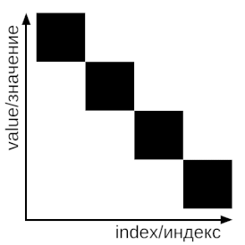

Сортировка Бого
Краткая информация
Bogo Sort — это шуточный алгоритм сортировки, который пытается случайным образом
перемешивать элементы до тех пор, пока они не окажутся в отсортированном порядке.
Его суть — в случайных перестановках, что делает его крайне неэффективным для практического использования.
Алгоритм
- Перемешать элементы массива случайным образом.
- Проверить, отсортирован ли массив. Если да, завершить алгоритм.
- Если нет, повторить с первого шага.